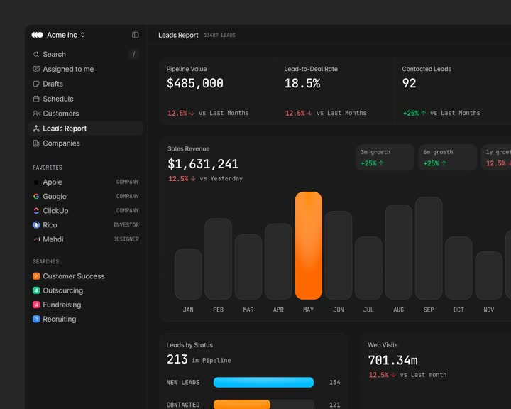

← all interactions
analytics dashboard
What it is
Analytics dashboard (Leads Report): a dark CRM - left nav with favorites (Apple, Google, ClickUp, Rico, Mehdi) and saved searches; main area has KPI cards (Pipeline Value $485,000, Lead-to-Deal 18.5%, Contacted 92) with red/green delta chips, a Sales Revenue bar chart whose hovered bar ignites orange (MAY $1,631,241) while others stay ghost-grey, growth-badge tooltips (3m/6m/1y), and Leads-by-Status progress bars.
Media

Frame-by-frame

0-100%
Dark dashboard (#111); MAY bar highlighted orange gradient with value + '12.5% down vs Yesterday' caption and growth badges appearing on the right (3m +25%, 6m +25%, 1y 12.5%); other bars flat #2A2A2C; KPI chips red down / green up; sidebar static. Hover drives the bar highlight + metric readout swap.
Mechanics
trigger
bar hover (chart scrub)
elements
sidebar, KPI cards + delta chips, bar chart with hover state, growth badges, status progress bars
properties
bar fill (grey -> orange gradient), readout value/delta swap, badge visibility
timing
highlight 150ms ease
easing
ease-out
loop
no
Build prompt
Build a dark leads dashboard. Sidebar 220px (#0D0D0E): logo row, nav items (13px, icons, active = white/8 pill), FAVORITES group (colored dot + name + role in caps 10px), SEARCHES group. Main: header 'Leads Report' + '13487 LEADS' muted. Three KPI cards: 12px muted label, 26px tabular value, delta chip (12.5% down red / +25% green, with arrow). Chart card 'Sales Revenue': 12 months of 36px-wide bars, radius 6, default #262628; on hover a bar becomes a vertical orange gradient (#F97316 -> #EA580C) with a glow, the big value ($1,631,241) + 'vs Yesterday' caption update to that month, and three growth badges (3m/6m/1y with +/- chips) fade in at top-right (150ms). Below: 'Leads by Status' card (213 in Pipeline, rows with colored 4px progress bars: blue New 134, orange Contacted 121) and 'Web Visits 701.34m' card. Font: Inter; numbers tabular.